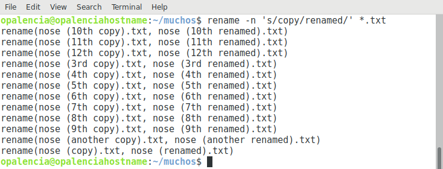

Renombrar archivos masivos > rename¶
Nombre del comando: rename
Man page online: https://linux.die.net/man/1/rename
Descripción: Renombra varios archivos a la vez en una instrucción, en pocas palabras sustituye una palabra por otra en los archivos a renombrar. Para optimizar el uso de este comando se requiere conocimientos de las “expresiones regulares”, son muy itilizadas en los lenguajes de programación. Todos los caracteres usados en los ejemplos y que pertenecen a las “regular expression o regex” son los siguientes: “s,g,y,i,^,d{0},(a-z),(A-Z)”. Para mayores detalles investiga qué son estas expresiones y cómo se utilizan.
Man page local: $ man rename o $ man rename > rename.txt
Instalado por defecto: Sí, al menos en Debian.
Algunas Opciones:
-n, -nono Sin acción: imprima los nombres de los archivos para cambiar el nombre, pero no los renombre, es decir, que no realice el renombrado.
-v, --verbose Explique qué se está haciendo.
-f, -force Sobre escritura: permita que los archivos existentes se sobrescriban.
Ejemplo 1: $ rename -n 's/copy/renamed/' *.txt, de todos los archivos contenidos en el folder actual y que tienen la extensión .txt, cámbiele o renómbrele la palabra “copy” por “renamed”. Si los archivos tienen nombres parecidos a este “lua-5.3.5.tar.gz” y queremos quitarle esos números o cualquier caracter especial que lleve, entonces habrá que incluirlos en la palabra que queremos quitar, por ejemplo, rename -n 's/-5.3.5//' *.tar.gz, pasaría de llamarse “lua-5.3.5.tar.gz” a “lua.tar.gz”.
Ejemplo 2: $ rename -n 's/copy/renamed/i' *.txt, de todos los archivos contenidos en el folder actual y que tienen la extensión .txt, cámbiele o renómbrele la palabra “copy” por “renamed” sin importar si los nombres están en mayúsculas o minúsculas.
Ejemplo 3: $ rename -n 's/^nose//' *.txt, de todos los archivos contenidos en el folder actual y que tienen la extensión .txt y además inician con la palabra “nose”, cámbiele o renómbrele la palabra “nose” por “nada”, es decir, que le quite la palabra “nose”.
Ejemplo 4: $ rename -n 's/ /-/g' *.mp4, en este ejemplo se reemplazan los espacios de los nombres de los archivos “.mp4” de la carpeta actual con un “guion”. Si el nombre es “Nombre de un video.mp4”, al aplicar el comando quedaría “Nombre-de-un-video.mp4”.
Ejemplo 5: $ rename -n 's/ //g' *, en este ejemplo le digo que le quite todos los espacios a los nombres de todos los archivos y carpetas de la ubicación actual.
Ejemplo 6: $ rename -n 's/\d{0}/inuyasha_/' *.mp4, en este ejemplo le digo agréguele la palabra inuyasha_ al inicio de cada archivo .mp4 que se encuentre en la carpeta actual. Si un video se llama “001.mp4” ahora el nombre cambiaría a “inuyasha_001.mp4”.
Ejemplo 7: $ rename -n 's/\./_inuyasha./' *.mp4, sustituya el caracter punto “.” por la palabra “_inuyasha.”. La mayoría de archivos tiene una extención que inicia con “.” más la extensión, siempre al final del nombre del archivo, por lo tanto al quitar ese punto se estaría eliminado la extensión, a eso se debe que le agregué el punto al final de la palabra “_inuyasha.”. Si un video se llama “001.mp4” ahora el nombre cambiaría a “001_inuyasha.mp4”.
Ejemplo 8: $ rename -n 'y/A-Z/a-z/' *.mp4, renombre todos los archivos “.mp4” de la carpeta actual de mayúsculas a minúsculas.
Ejemplo 9: Este es un ejemplo en el que se renombran varios archivos por la extensión que éstos tienen y se usa el commando mv en vez de rename. Para ejecutar el ejemplo hay que crear un scrip rename.sh, darle permisos de ejecución y colocarlo en la carpeta que contiene los archivos a renombrar y luego ejecutarlo con ./rename.sh.
Consideraciones: los archivos no deben iniciar con caracteres especiales y tampoco debe haber espaciones en los nombres de los archivos. -%nombre archivo.txt, este es un ejemplo claro que no deben llamarse de esa manera los archivos, lo correcto sería: nombre-archivo.txt, por mencionar un ejemplo.
rename.sh
#!/bin/bash
i=1
for FILE in `ls *.jpg`; do
NEWNAME=$(printf '%01.1d.jpg' $i)
echo Rename $FILE to $NEWNAME
mv $FILE $NEWNAME
i=$((i+1))
done
Nota
Éste scrip hará lo siguiente: renombrará todas las imagenes que terminen en .jpg con números que irán incrementando iniciando con 1 hasta las n imágenes que se encuentren en el folder donde se ejecuta dicho scrip; siempre y cuando se respeten las consideraciones arriba mencionadas.